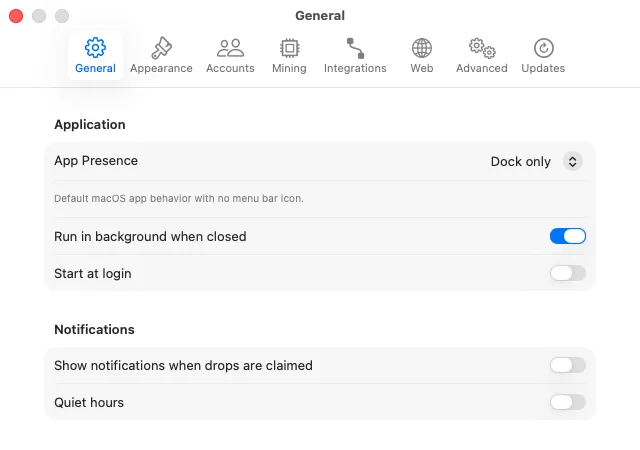
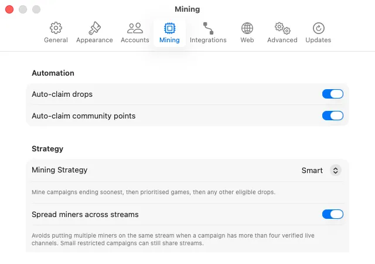
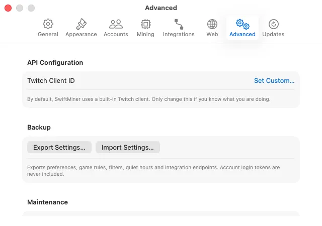
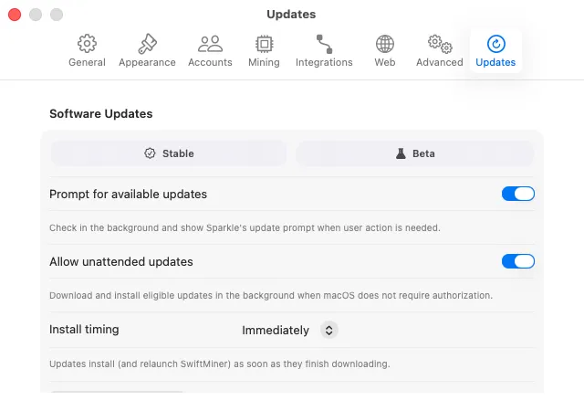

Open settings in SwiftMiner by choosing SwiftMiner > Settings... in the macOS menu bar, or by pressing the ⌘, shortcut on your keyboard. Settings are grouped into tabs for the main parts of the application.
General Settings
Manage application visibility, startup behavior, notifications, game artwork, and miner pictures.

| Setting | Description |
|---|---|
| App Presence | Choose where SwiftMiner appears:
|
| Run in background when closed | Keep miners running even if you close the main window. Highly recommended for uninterrupted farming. |
| Start at login | Launches SwiftMiner automatically when you log in to your Mac.
Note: You may need to approve SwiftMiner in macOS System Settings > Login Items. |
| Start minimized | Hide the main window on login launch so it runs quietly in the background. (Only applies to automatic login launches). |
| Miner pictures | Choose whether a miner's header picture comes from Discord (the account it is linked to) or Twitch (the account it mines with). Whichever you pick, the other service is used when it has no picture, and the miner's initial is shown when neither does. |
Accounts Settings
Manage your linked Twitch profiles. You can add new accounts, remove inactive connections, or re-authenticate expired sessions.

- Add Account: Generates a new Twitch device login flow. You can link multiple accounts to farm Drops simultaneously.
- Reconnect: If a session expires (showing
Needs Auth), click Reconnect to refresh credentials without removing the account history. - Remove Account: Deletes saved credentials for that profile from your macOS Keychain and removes it from SwiftMiner.
Mining Settings
Configure automated behaviors, claim triggers, and recovery logic.

For detailed campaign ordering, global and account-specific priorities, exclusions, and backup channels, see Game Rules & Failover Streamers.
| Setting | Description |
|---|---|
| Auto-claim drops | Automatically submits claim requests to Twitch as soon as you accumulate enough watch time for a reward. |
| Auto-claim channel points | Automatically claims green bonus channel points on watched channels when they pop up. |
| Sync miner state | Links the run states of all miners. Starting or stopping one miner will start or stop them all. |
| Auto-start on launch | Miners automatically resume watch sessions when the app opens, provided they are authenticated. |
| Avoid duplicate streams | When farming the same game on multiple accounts, SwiftMiner tries to distribute miners to different broadcasters to reduce stream overlaps. |
| Prioritise followed streamers | Prefer channels that you follow or subscribe to when choosing a broadcaster for a campaign. |
| Enable badges & emotes | Includes campaigns that only reward Twitch profile badges or channel emotes (instead of in-game items). |
| Anti-stall recovery | Monitors drop progress. If watch time has not progressed for several minutes on an active stream, SwiftMiner automatically refreshes the stream or switches channels to resume earning. |
Advanced & Logs Config
Configure internal developer settings, UI layouts, and logging levels.

- Log level: Set the granularity of events stored in the logs:
Debug,Info,Warning, orError. - Show log console: Toggles a panel in the main window containing real-time diagnostic output.
Updates Settings
SwiftMiner leverages the Sparkle framework to deliver secure, automated updates.

- Check for updates: Manually trigger a check against the update server.
- Update Channel: Choose between
Stable(fully tested releases) orBeta(early-access features). - Automatically check for updates: Allow Sparkle to query for updates in the background.
- Allow unattended updates: Downloads eligible updates silently and installs them according to your selected timing policy.
See Automatic & Unattended Updates for details about the initial prompt, install timing, and macOS App Management permission.